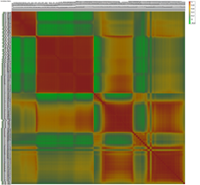

|
 |
The bands are arranged top to bottom on the y axis, and right to
left on the x axis. Autocorrelation, always 1, runs down the
principal diagonal. Correlations of 1 are in red, and the lowest correlation in the data set is in bright green. Bands generally correlate strongly with adjacent bands, but there are wavelengths where the correlations change rapidly--these depend on what surface materials occur in the scene. |
Last revision 4/5/2022